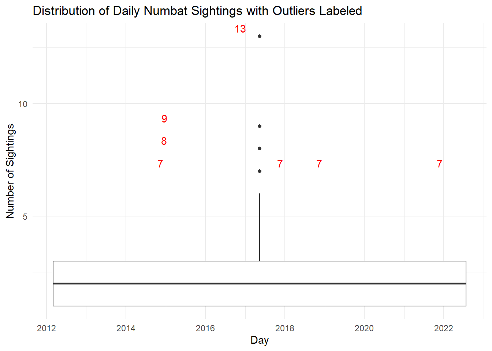

Make a stem-and-leaf of the sightings. Describe the shape.
stem(numbat_sightings$sightings)
The decimal point is at the |
1 | 00000000000000000000000000000000000000000000000000000000000000000000+6
2 | 000000000000000000000000000000000000000000000000000000000000
3 | 00000000000000000000000
4 | 00000000000
5 | 000000000
6 | 00000000
7 | 0000
8 | 0
9 | 0
10 |
11 |
12 |
13 | 0
The shape of the stem-and-leaf plot appears to be positively/right-skewed. This is because majority of the days have relatively low sighting counts, while there are fewer days with high sighting counts. For instance, as we move down the plot (from stem 1 to higher stems), the frequency of sightings decreases significantly. Stems beyond 7 have very few, if any, data points (mostly just 1 sighting), therefore suggesting that days with higher sighting counts are less common and more spread out.
If you were to transform the data to symmetrise, what function would you recommend? Explain why or why not this would be recommended for this variable.
We would use the square root transformation (sqrt). This is because it helps to reduce the influence of larger counts by normalizing right skewness and compressing the data range. It can also be applied well to zero/small values; given that our data represents sighting counts and has many near-zero values, the square root transformation can therefore help balance out the distribution to some extent by maintaining meaningful values for zero/small counts.
However (according to the histogram below), it should be noted that despite applying the square root transformation, the distribution still remains somewhat right-skewed and not symmetric. This skewness is primarily attributed to the presence of very high numbat sightings that are not effectively mitigated by this transformation. While the square root transformation is indeed effective in handling moderate right-skewness, it may struggle to normalize the distribution when extreme outliers are present. In such cases, outlier handling techniques may be necessary to achieve a fully symmetric distribution.
On the other hand, we would not use the logarithmic transformation (log) as this is more appropriate when we have data with exponential growth, or when the data has a multiplicative relationship. While it can also be effective for reducing skewness, it might not be suitable for count data with many zeros or near-zero values as the logarithmic transformation has a disproportionate impact on small values compared to larger ones. This can lead to distortion in the transformed data, especially if the original counts are small.
The scatter plots below provides a visual representation of how the transformations affect the numbat-sightings data, each showing the relationship between the original sightings and the transformed variable (square root and logarithm), along with a fitted linear regression line. We can see that the data points cluster more closely around the line for the square root transformation compared to the log one, thus indicating a better fit.
numbat_sightings$sqrt_transform <-sqrt(numbat_sightings$sightings)p1 <-ggplot(numbat_sightings, aes(x = sightings, y = sqrt_transform)) +geom_point(color ="blue") +geom_smooth(method ="lm", color ="red") +labs(title ="Square Root Transformation")numbat_sightings$log_transform <-log(numbat_sightings$sightings +0.001)p2 <-ggplot(numbat_sightings, aes(x = sightings, y = log_transform)) +geom_point(color ="darkgreen") +geom_smooth(method ="lm", color ="red") +labs(title ="Logarithmic Transformation")grid.arrange(p1, p2, ncol =2)
`geom_smooth()` using formula = 'y ~ x'
`geom_smooth()` using formula = 'y ~ x'
ggplot(numbat_sightings, aes(x = sqrt_transform)) +geom_histogram(binwidth =1, fill ="blue", color ="black") +labs(title ="Histogram of Square Root Transformation")
Following Tukey’s EDA, identify which observation would be the median, Q1, Q3, and thus report the five-number-summary. Which statistic does Tukey refer to as the hinge?
summary(numbat_sightings$sightings)
Min. 1st Qu. Median Mean 3rd Qu. Max.
1.000 1.000 2.000 2.304 3.000 13.000
The median value is 2, which indicates that majority of the daily numbat sightings were relatively low with a value of 2 or less. This is because 50% of the numbat sightings per day are at or below 2, with 50% being at or above 2 sightings per day. The Q1 value is 1 whereas the Q3 value is 3. The minimum value is also 1 (i.e. the minimum number of daily numbat sightings is 1) while the maximum value is 13 (i.e. the maximum number of daily numbat sightings is 13).
The hinges that Tukey referred to are the quartiles which divide the dataset into four equal parts. These include the first quartile (Q1) and third quartile (Q3). Q1 (lower hinge) represents the lower boundary of the middle 50% of the data whereas Q3 (upper hinge) represents the upper boundary of the middle 50% of the data. For instance, the Q1 value of 1 means that 25% of the daily numbat sightings are at or below 1; the lowest 25% of the data have days with 1 or zero numbat sightings per day. On the other hand, the Q3 value of 3 infers that 75% of the daily numbat sightings are at or below 3; the upper 25% of the data encompasses days with 3 or more numbat sightings per day.
Compute the step, inner fence, outer fence. Make a Tukey-style schematic plot, hand-drawn. Which observations would be considered to be outliers?
The step is calculated as 1.5 times the H-spread (difference between the 75th percentile Q3 and the 25th percentile Q1). The H-spread is also known as the inter-quartile range. Meanwhile, the inner and outer fences define the boundaries beyond which data points are considered as potential outliers, thus representing the cut-off values for outliers in a dataset. Inner fences are 1 step outside the hinges, whereas outer fences are 2 steps outside the hinges.
Based on the calculations above, we can see that the step is 3, with the inner fences being -2 and 6 whereas the outer fences are -5 and 9. In the hand-drawn schematic plot below, it is also observed that any observations beyond the inner and outer fences (i.e. any observations above 6 or 9, and any observations below -2 and -5) will be considered as outliers. Inner fences are drawn in blue whereas outer fences are colored in red. For example, the previous five-number-summary statistics showed that 13 was the maximum value of daily numbat sightings. This would be an outlier, as it passes the boundary of the upper outer fence which is 9.
knitr::include_graphics("images/schematic.jpg")
Use R to make a default boxplot. Which observations would be considered to be outliers? Why or why not is this a reasonable set of outliers?
ggplot(numbat_sightings, aes(x = day, y = sightings)) +geom_boxplot() +geom_text(data = numbat_sightings %>%filter(sightings > (quantile(sightings, 0.75) +1.5*IQR(sightings)) | sightings < (quantile(sightings, 0.25) -1.5*IQR(sightings))),aes(label =sprintf("%d", sightings), x = day, y = sightings),vjust =-0.5, hjust =0.5, color ="red") +labs(x ="Day",y ="Number of Sightings",title ="Distribution of Daily Numbat Sightings with Outliers Labeled") +theme_minimal()

In the boxplot of daily numbat sightings (with outliers outlined in red), there appear to be four potential outlier values (7, 8, 9 and 13). Considering that these are higher than usual numbers of sightings, there are a few reasons why this set of outliers may not be reasonable.
Firstly, there could be seasonal effects such as during breeding season, when reported sightings would be higher on days when numbat activity is naturally increased. Over-reporting or double-counting may also contribute to these outliers, if observers inadvertently submit the same sightings multiple times. Additionally, local awareness campaigns and tours/organized events which heighten public interest can lead to outliers if observers are brought to specific locations known for for high numbat activity during certain times of the year.